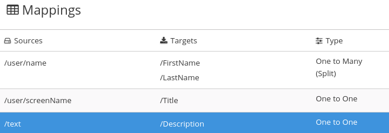
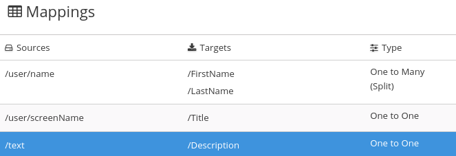

Creating and deploying the Twitter to Salesforce sample integration
To create and deploy an integration that uses the Twitter and Salesforce connections that you created, the main steps are:
-
You registered your {prodname} environment as a Twitter client and created a {prodname} Twitter connection.
-
You registered your {prodname} environment as a Salesforce client and created a {prodname} Salesforce connection.
-
{prodname} is open and you are logged in.
Choosing the start connection
In {prodname}, to create the sample Twitter to Salesforce integration, the first task is to choose the start connection.
-
You created a Twitter connection.
-
On the left, click Integrations.
-
Click Create Integration.
-
On the Choose a connection page, click the Twitter connection that you created. If you gave it the example name, you would click Twitter Connect 1. When the integration starts, it uses the credentials defined in this connection to connect to Twitter.
-
On the Choose an action page, to the right of the Mention action entry, click Select.
-
On the Configure the action page, click Next. No configuration is required.
When the integration is running, after connecting to Twitter, the integration monitors Twitter for mentions that include your Twitter screen name. A match triggers the next step in the integration. However, before you add steps that operate on data between connections, you choose the connection that the integration uses to finish its work.
Choosing the finish connection
In {prodname}, to continue creating the Twitter to Salesforce sample integration, after you add the start connection, you add the finish connection to the integration.
-
You added the Twitter connection to the integration as the start connection.
-
{prodname} is prompting you to add the finish connection.
-
You created a Salesforce connection.
-
On the Choose a connection page, click the Salesforce connection that you created. If you gave it the example name, you would click SF Connect 1. This integration finishes by using the credentials defined in this connection to connect to Salesforce.
-
On the Choose an action page, to the right of the New record entry, click Select.
-
On the Configure the action page, click in the Object name field and select Contact as the Salesforce record to create.
-
Click Next to add the finish connection to the integration.
Adding a basic filter step
In {prodname}, to continue creating the Twitter to Salesforce sample integration, add a basic filter step that checks tweets that mention you for particular content. At integration execution time, processing continues only if that content is present.
-
You added the Twitter connection as the integration’s start connection.
-
You just added the Salesforce connection as the integration’s finish connection.
-
In the integration visualization, click the plus sign, which displays the steps that you can add to the integration.
-
Click Basic Filter.
-
In the Property Name field, start to enter
textand whentextappears below the field, click it. The Twittertextfield, which contains a tweet, is the data that you want the filter to evaluate. -
In the Operator field, accept contains as the condition to be met for the integration to continue.
-
In the Keywords field, enter
#RedHatIsGreator some other text that you choose for the value to check for. A tweet that mentions you must contain the text you enter here for the integration to continue operating on this data. -
Click Done to add the basic filter step to the integration.
Adding a data mapping step
To continue creating the Twitter to Salesforce sample integration, add a data mapping step that correlates Twitter mention fields to Salesforce contact fields.
-
The integration’s start connection is to Twitter.
-
The integration’s finish connection is to Salesforce.
-
You just added the filter step between the two connections.
-
In {prodname}, in the integration visualization, click the plus sign that is between the filter step and the finish connection.
-
Click Data Mapper and wait a few moments. When the data fields appear, the Sources panel on the left displays the Twitter fields and the Target panel on the right displays the Salesforce fields.
-
Map the Twitter
namefield to the SalesforceFirstNameandLastNamefields:-
In the Sources panel, click the magnifying glass
 to display the search field and enter
to display the search field and enter name. -
Under the
userfolder, click thenamefield. -
In the Target panel, scroll down and click FirstName. The data mapper displays a line from the source name field to the target FirstName field.
-
In the Target panel, scroll down, hover over LastName, press CTRL-Mouse1 (CMD-Mouse1 on MacOS) and select LastName. The data mapper displays another line from the Twitter name field, but this time it goes to the Salesforce LastName field. The blue lines indicate the current focus.
If you accidentally map the wrong fields then delete the incorrect mapping by selecting one of its fields to make it the current mapping. Then click the trash can icon in the top right of the data mapper’s Mapping Details panel.
-
-
Map the Twitter
screenNamefield to the SalesforceTitlefield:-
In the Sources panel, click the screenName field.
-
On the right, at the top of the Target panel, click the magnifying glass
to display the search field and enter Title. -
Click the Title field. The data mapper displays a line from the Twitter screenName field to the Salesforce Title field.
-
-
Map the Twitter
textfield to the SalesforceDescriptionfield:-
In the Sources search field, enter
textand click the text field. Be sure to click the toplevel text field. Do not click one of the text fields that is contained in the user field. -
In the Target search field, enter
description. -
Click the Salesforce Description field to create the mapping.
-
-
In the upper right, click the grid icon
 to
display the list of mappings, which should look like this:

to
display the list of mappings, which should look like this:
 -
In the upper right, click Done.
Giving the integration a name and deploying it
When the Twitter to Salesforce sample integration is complete then you can deploy it and see how it works.
-
The integration’s start connection is Twitter.
-
The integration’s finish connection is Salesforce.
-
The integration has a filter step.
-
You just added a data mapping step to the integration.
-
In the upper right corner, click Publish.
-
In the Name field, enter a name of your choice that distinguishes this integration from any other integrations. For example:
Twitter to Salesforce Sample Integration. -
In the Description field, optionally enter some information about the integration.
-
Click Save and publish.
{prodname} starts to deploy the integration and then displays the integration summary. Near the top, you can see a progress indicator that shows the publishing stages. {prodname} is generating the runtime for the integration and will start it when the runtime is ready. This takes a few minutes.
A {prodname} account is limited to a specific number of integrations that can be running at one time. For details, see the pricing plan. If you are already running the maximum number of integrations, then you must stop an integration before you can start running another one.
If you are using a {prodname} evaluation account, then only one integration at a time can be running. If you already created one of the other sample integrations and that integration is running then this integration is automatically in the Stopped state. You must stop the running integration and then you can publish this integration.
-
If you are already running the maximum number of integrations, follow these steps to stop an integration:
-
In the left panel, click Integrations.
-
In the entry for the integration that you want to stop, click
 on the far right.
on the far right. -
In the popup, click Stop.
-
-
After stopping an integration, start another integration as follows:
-
In the left panel, click Integrations.
-
In the entry for the integration that you want to start, click
on the far right. -
In the popup, click Start.
-